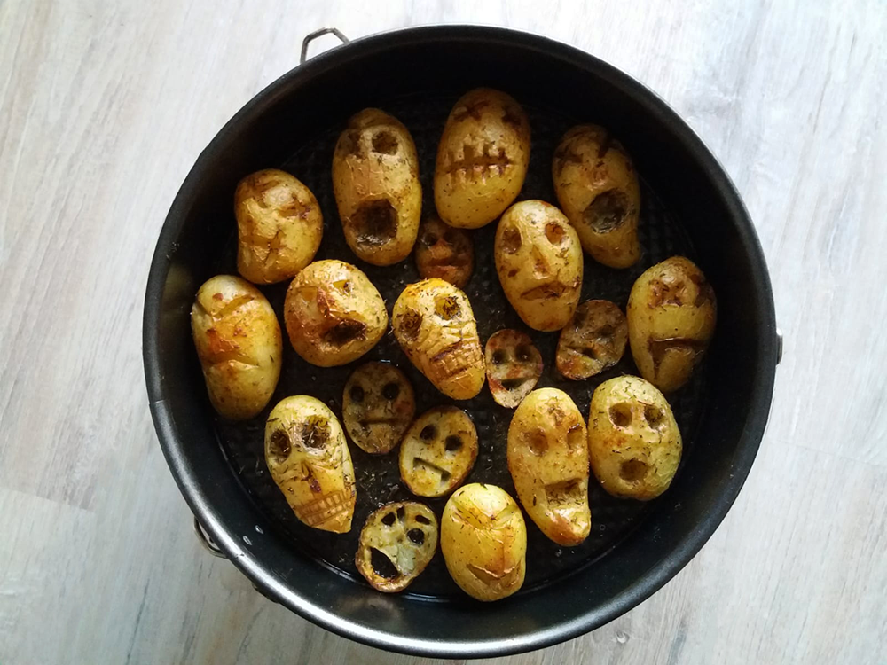

enge aardappels
Deze hapjes zijn perfect voor halloween!

Bereidingsduur: 70 minuten
Aantal personen: 4
Ingrediënten:
14 kleine aardappels
1 handje tijm
1 handje paprikapoeder
1 handje knoflookpoeder
naar smaak peper en zout
olijfolie
14 kleine aardappels
1 handje tijm
1 handje paprikapoeder
1 handje knoflookpoeder
naar smaak peper en zout
olijfolie
Instructies:
1. Verwarm de oven voor op 200 graden. Kerf enge gezichtjes in de aardappels en vet deze in met olie. Bestrooi ze met de kruiden en wrijf deze eventueel over de oogjes heen zodat ze beter zichtbaar zijn.
2. Verwarm de aardappels 40 minuten in de oven. Serveer met tomatensaus.
1. Verwarm de oven voor op 200 graden. Kerf enge gezichtjes in de aardappels en vet deze in met olie. Bestrooi ze met de kruiden en wrijf deze eventueel over de oogjes heen zodat ze beter zichtbaar zijn.
2. Verwarm de aardappels 40 minuten in de oven. Serveer met tomatensaus.